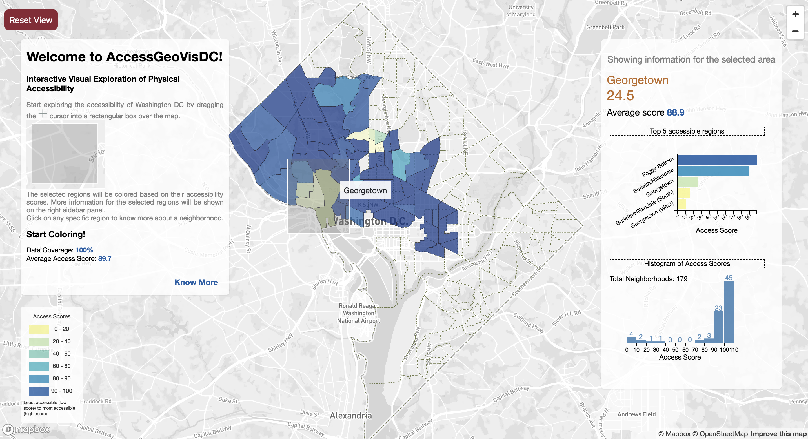

Illustration showing the geospatial visualization interface. The figure shows Washington DC's accessibility at the neighborhood level in the form of a choropleth. Left sidebar instructs the user on how to use the tool. Right sidebar shows information on neighborhood(s) as the user explores the map. The operations that are supported by the system are: zooming, panning, brushing, linking, hovering and clicking.
Abstract
For people with mobility impairments, street infrastructure such as sidewalks play a crucial role in navigating within cities. However, there is a severe lack of readily available tools for querying accessibility information. In this project, we will work on building a tool that will visualize physical accessibility of Washington DC. The interactive prototype will highlight (in)accessible areas of DC via creative use of geo-visualization techniques such as heat maps, street-level visualization and others, for a dataset of geo-tagged accessibility labels. This dataset is from Project Sidewalk (projectsidewalk.io), an online tool that crowdsources labels for accessibility features and problems within Google Street View (GSV). This dataset has >250,000 labels on accessibility of sidewalks in Washington DC. Each label denotes a specific accessibility attribute in the physical world such as Curb Ramp, Surface Problem, Obstacle in Path, Missing Curb Ramp, its lat/lng position and associated metadata (severity rating, text description, and underlying GSV image). The data (label types with their positions) is available via Project Sidewalk's GeoJSON API. The stakeholders of such a tool would be city residents (esp. people with mobility impairments), city governments, and researchers & data enthusiasts. Each stakeholder has their own requirements from such an interface. For the purposes of this class project, we only focus on one task that answers the question: "What is the accessibility of a specific region and what are the factors influencing the accessibility of this region?".
Summary Image of the Visualization

This image shows a final image of the graph once the user interacts with every region/neighborhood in Washington D.C. The chloropleth generated is based on the access score for each neighborhood. The access score is a quantitative measure provided by the Project Sidewalk API to compare neighborhoods. It's a weighted average of the severity and number of data points/incidents reported within each area. The chloropleth is an indication of which areas are more accessible in comparison to others. The linear coloring described using the legend is used to encode the access scores of each area.
How do we run it?
The visualization tool is hosted on github. To access the visualization, go to https://cse512-18s.github.io/sidewalk-a11y-geovis. The tool guides the user through the interface with the help of instructions at each step. The visualization system implements a coloring metaphor where the user interactively colors the city of DC based on their region(s) of interest. Interactions such as clicking, hovering, zooming, panning, brushing and linking are in place for the user to explore by drilling down from the overview city level down to the detailed street level. The interface displays live data using Project Sidewalk's API. The interactions are designed to be intuitive. It is far from perfect. If something does not work as expected, contact us. We hope you have a fun time playing with the visualization tool and learning about DC's physical accessibility!